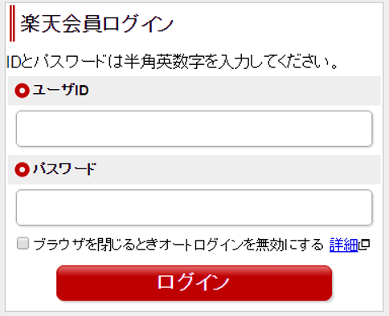
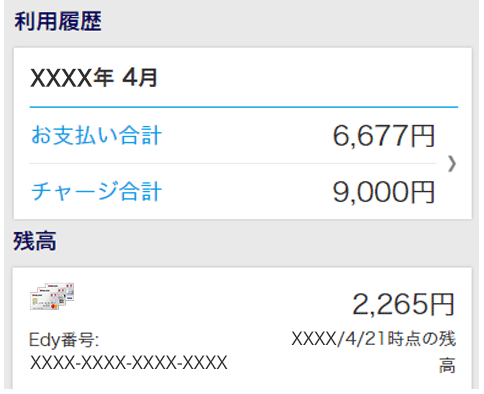
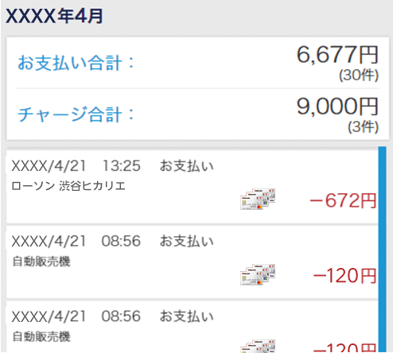

楽天Edy残高の
照会方法
楽天EdyのオフィシャルサイトでEdy残高＆ご利用履歴の確認ができます
- ※ 楽天Edyのオフィシャルサイトへ移動します。
確認方法
- 楽天ユーザIDとパスワードを入力

- 月ごとの利用履歴の合計・Edy残高が確認できます。更に詳細を確認したい場合は、対象月の[詳しく見る]をクリック

- 対象月の詳細履歴が確認できます。

- ※ 楽天Edyのオフィシャルサイトへ移動します。